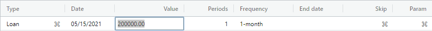
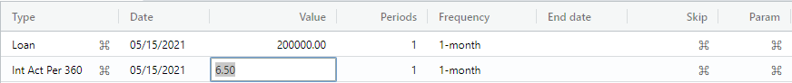

Loan tutorial overview.
This tutorial creates a loan with an odd-days period (i.e., a stub period). The tutorial then applies an annual bump payment for 10 years, which could represent an annual bonus. Finally, the periods of the regular payment event is calculated to reduce the term of the loan. The overall Annual Percentage Rate (APR) and associated Reg-Z information are also calculated and shown in the summary.
Please enter the dates given in this tutorial to avoid any automatic date adjustments (e.g., leap year) that can affect the final cashflow balance.
Note: This tutorial meant is for the default en-US locale. If another locale is chosen, the AmFn Wasm will handle the date format, decimal format, currency format, and spoken language resources for that locale.
Create loan cashflow.
Let's begin by selecting the File -> New Cashflow menu item. A dialog is displayed asking you to enter a cashflow name and select a template for this cash flow. Please enter the name of your cashflow, select "Standard loan", and press the Submit button.
A new cash flow is created with a "Loan" event selected for you. Press the Enter key until you are positioned in the "Date" column and enter 05/15/2021. Press the Enter key until you are positioned in the "Value" column and enter 200000 (i.e., two hundred thousand).

Create interest change.
Press the Enter key until a new interest change event is created. Press the Enter key until you are positioned in the "Value" column and enter 6.5 (i.e., 6.5 percent).

Create regular payment.
Press the Enter key until a payment event is created. Press the Enter key until you are positioned in the "Periods" column and enter 240 (i.e., 20 years).
Click back in the "Value" column and press the Calculate button.
Create final payment.
Press the Enter key until a final payment event is created. Press the Enter key until you are positioned in the "Value" column and press the Calculate button. Our balance shows 0 on the status line, which indicates the loan is satisfied.
Create annual bump payments.
Position on any cell in the final payment event and press the "Delete" button.
Press the Insert button, which will show the event that can be created into the cashflow from the loan template. Select the "Normal payment" event and press the Submit button.
Press the Enter key until you are positioned in the "Date" column and enter the same date as the regular payment. Click on the "Value" column of the new event just created and enter 5000 (i.e., Five thousand). Press the Enter key once and enter 10 periods. Finally, press the Enter key once and select a "1-year" frequency (i.e., annual bump payments).
Recalculate the new term.
Position on any cell in the final payment event and press the "Delete" button.
Click on the "Periods" of the regular payment that currently shows 240 payments and press the Calculate button to calculate a new loan term. You can optionally re-create the final payment by following the "Create final payment" step above.